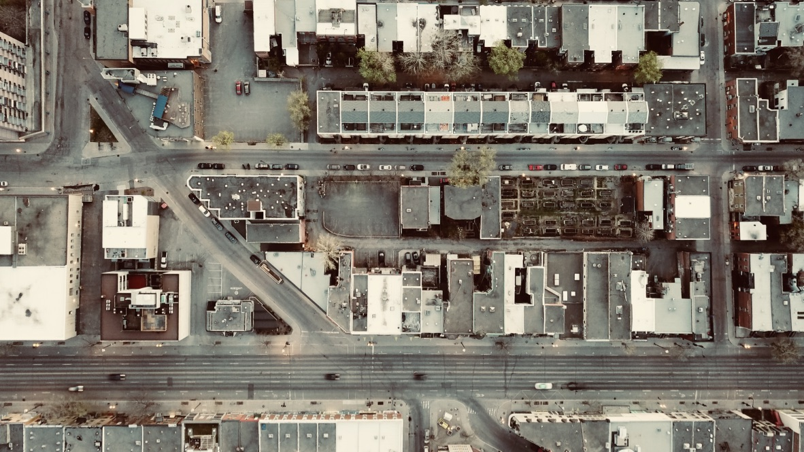

Montréal, Québec

Montréal is the only fully bilingual city in the French Canadian province of Québec, and it's known for its diversity, art, and the never-ending construction. Mount Royal - the small 230m mountain in the centre of the city from which Montreal gets its name - allows for a quick escape into nature with some pretty nice views from the top. In the winter, Beaver Lake on the "summit" is turned into a skating rink which you can get to by cross-country skiing up along the mountain, if you're feeling adventurous. You can find my full Google Maps guide here.

Things to Do
Zero Gravity Rock Climbing & Yoga Gym
Allez Up Rock Climbing Gym
The Montreal Museum of Fine Arts
Montreal Science Centre
La Ronde Amusement Park
Parc La Fontaine
Tamtams on Mount Royal on warm Sunday Mornings
A/MAZE: escape games
Eva B: funky second-hand store
Bike to Visitation Nature Park
Jean Talon Market and Atwater Market
Watch the sunset from on top of St Joseph's Oratory
Concordia Greenhouse
l'Escalier
Casa Del Popolo: Live Music Venue

Hundreds of kilometers of alleyways filled with art connect this vibrant city.
Restaurants & Cafés
La Banquise
Pizzeria Magpie
QDC Burger
Guillaume Bakery
Lan Zhou Noodles
Ramen Ya
Café Olimpico
Qing Hua
La Khaïma Cuisine Nomade
Darbar
Kafé Kafta
Omnivore
Patati Patata Friterie de Luxe
Anticafé (Coworking)
Dieu du Ciel!
Le 4e Mur: Murder-Mystery Bar
Café Milano
Fairmount Bagels


Every winter, an ice bridge opens just west of the island of Montreal. Usually all through January and February, you can drive or walk across the frozen Lake of Two Mountains which separates the towns of Hudson and Oka.
Outside of the City
Mauricie National Park
Regional Park of Seven Falls (Sept-Chutes)
Sommet Morin Heights
Ski Saint Sauveur
Ski Mont Vallée Bleue